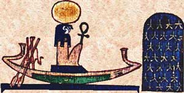

Происхождение и образ
Ра (егип. rꜥ) — верховный солнечный бог-демиург Древнего Египта, чей культ насчитывает более трёх тысячелетий. В гелиопольском мифе творения Ра существовал прежде всего: из первозданного океана Нуна всплыл холм Бенбен, и на нём Ра «возник сам из себя» — самородный бог, не рождённый никем. Из него вышли первые поколения богов: Шу (Воздух) и Тефнут (Влага), от них — Геб (Земля) и Нут (Небо), и вся остальная Эннеада — девятка гелиопольских богов.
Ра — не просто «солнце»: он солнечное мировое начало. Его глаз — видимое солнце, его ладья несёт свет по небу днём и через подземный Дуат — ночью. Имя «Ра» носили фараоны («Сын Ра» — часть титулатуры с эпохи II династии), а с Нового царства Ра слился с фиванским Амоном в великого Амон-Ра — царя всех богов.
Три лика солнца: Хепри, Ра-Хорахти, Атум
Египтяне видели солнце в трёх состояниях, и Ра — все три сразу:
- Хепри — «становящийся», утреннее солнце в образе скарабея, который катит диск зари, как навозный жук — шарик.
- Ра-Хорахти («Ра — Гор двух горизонтов») — солнце в зените, крылатый диск, правящий небом.
- Атум («завершённый») — заходящее солнце, старый царь, уходящий в Дуат.
Суточный цикл Ра — это жизнь: рождение утром, царение днём, «смерть» вечером и возрождение наутро после ночного путешествия. Этот цикл — модель воскресения для всего Египта.
Ночное путешествие и битва с Апопом
Каждую ночь Ра входит в Дуат — подземное царство из двенадцати часов. На ладье Месекетту («Та, что спасает») он плывёт по водам подземного Нила, и с ним — боги и души умерших, помогающие грести и колдовать. Главное препятствие ночи — гигантский змей хаоса Апоп (Апофис), который каждую ночь пытается поглотить солнечную ладью и вернуть мир в небытие.
В носу ладьи стоит Сет — по мифу единственный, кто по силе способен поразить Апопа гарпуном; в «Книге мёртвых» сохранились заклинания «уничтожения Апопа», которые жрецы читали, плюя на изображённого змея. Восход солнца каждое утро — доказательство победы Ра. Тот же мотив «хрупкого порядка, который нужно отвоёвывать каждую ночь», что и в скандинавском Рагнарёке: Египет × Скандинавия.
Миф об Исиде и тайном имени Ра
«Сказание об Исиде и Ра» (папирус из Рамессеума, Новый царство): Исида — «богиня, ведающая многим» — из земли, смоченной слюной спящего Ра, лепит змея и пускает его на путь гуляющего бога. Ра жалит змей, и только истинное имя способно снять отравление. Исида соглашается помочь в обмен на имя Ра — сокровенное, «скрытое в теле его, выше его позвонка», дающее власть над всем миром. Наконец Ра передаёт имя из сердца в уста Исиды, и та исцеляет его магией.
Это — ключевой миф о Хеке: слово-имя создаёт и спасает реальность; знать истинное имя — значит обладать самим существом. Тот же мотив, что в скандинавской «Речи Вафтруднира», где Один ставит голову на кон ради знания имён миров: сравнение.
Культ Ра
Главный центр культа — Гелиополь (Иуну, «Город Столпа»), где в храме хранился камень Бенбен — осколок первого холма творения. Обелиски — «окаменевшие лучи» Ра; храм солнца фараона Ниусерры (V династия, ок. 2430 до н. э.) был открытым двором с алтарём под небом: солнце не нуждалось в статуе — ему молились на свету. Каждый день в храме Ра служился ритуал «отверзания дверей» святилища и подношения по часам суточного круга.
Фараоны именовались «Сынами Ра» (са-Ра), и с Древнего царства солнечная теология стала государственной: «Тексты пирамид» пронизаны идеей, что царь после смерти присоединяется к ладье Ра и путешествует по небу вечно.